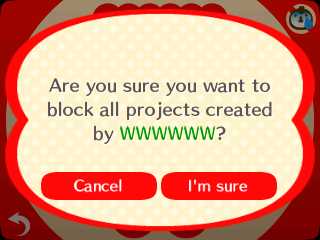
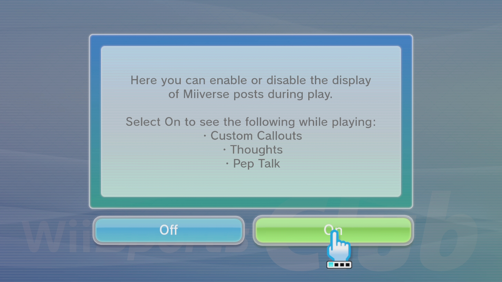
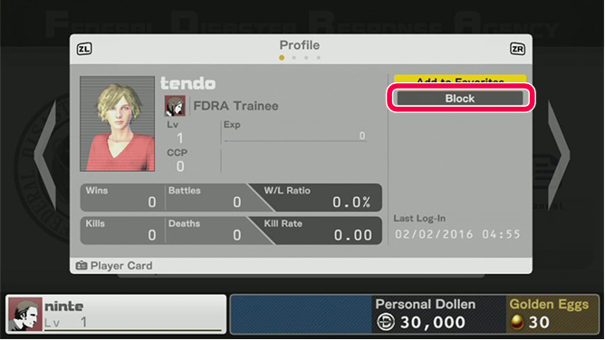
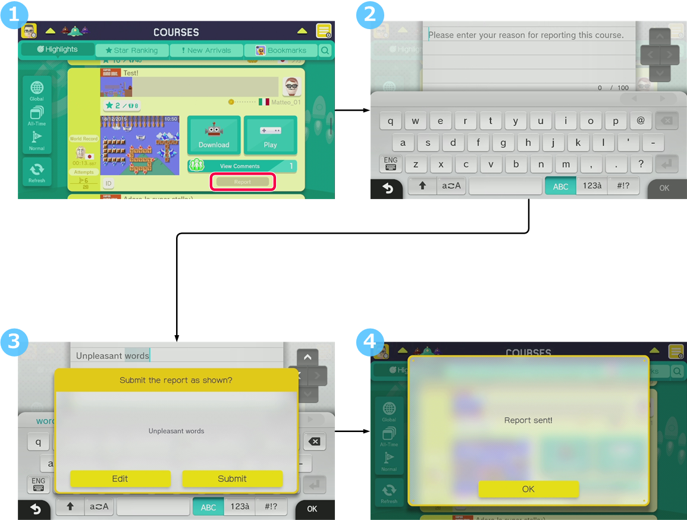

In some released applications, UGC that users have found offensive or that server administrators have judged to be inappropriate is hidden so that users can no longer see it. This section presents the following two example methods to accomplish this.
If your application emphasizes communication between users, Nintendo recommends implementing both of these methods because such applications are especially susceptible to unintended outcomes when users communicate.
If the user receives UGC multiple times from the same offensive user because UGC exchange between them occurs multiple times, it may significantly impair that user's experience and lead to that user filing a complaint. For this reason, Nintendo recommends incorporating a mechanism into your application that allows users to prevent further UGC exchange with offensive users, for example by blocking those users. Released applications use various different approaches to implement features that let users control what UGC they receive. One approach is to no longer matchmake with specified users; another approach is to completely disable receipt of UGC from all users. Different applications use whatever approach is best suited to their design.
★ See Examples of preventing exchange of UGC with offensive users for how some released applications have handled this.
If your application publishes UGC on a server, Nintendo recommends establishing a system to respond to user requests to take down UGC. Some released applications make it easy for users to contact the publisher by providing an in-application feature for users to report inappropriate UGC, and some design this feature in a way that allows that particular UGC to be easily found again via information included in the report.
If your application saves UGC in the Nintendo Switch system's save data, it's more difficult to prevent that UGC from being published again, because it can't be deleted from the save data in the same way that it can be taken down from a server. If you're in this situation, where you can receive user contacts about UGC but it's difficult for you to actually delete that UGC in response, implement a handling method that prevents users from continuing to see that inappropriate UGC. See Preventing exchange of UGC with offensive users for ideas. Note that in some cases—particularly if your application allows redistribution of UGC that cannot be deleted by server-side operations—further handling may be needed to prevent that UGC from spreading unchecked. In these cases it is best to restrict redistribution, as described in 4.2 Preventing users from spreading inappropriate UGC.
If your application provides an in-application feature for users to report UGC, you can make it easy for users to specify the exact UGC they want to report by displaying an ID for the UGC or linking it to some other information that could be used to identify it again.
If your application publishes UGC on NEX data stores, consider offering a way to identify individual UGC data files by displaying some sort of data ID in whatever way best suits the design of your application. For more information, see the explanation about displaying data IDs in the NEX Manual.
★ See Examples of systems to take down UGC for how some released applications have handled this.
|
Example
|
Description of example
|
Types of UGC
|
|---|---|---|
|
Animal Crossing: Happy Home Designer for Nintendo 3DS An inappropriate creation
 |
When users view an inappropriate creation, they can blacklist the creator of that UGC. UGC created by blacklisted users no longer appear in the pool of browsable creations within this application. |
Maps and images made by combining preset parts |
|
Wii Sports Club for Wii U Miiverse display settings
 |
If users are offended by a Miiverse post shown inside this application, they can turn off display of all Miiverse posts. | Text, images |
|
Devil's Third for Wii U Another player's profile screen
 |
The user can go to another player's profile screen, and from there, register that other player to this application's independent blacklist. In this example the other player is named "tendo". The user is no longer able to exchange chat or email with blacklisted players. But since this application's blacklist is separate from the blocked-user list built into the Wii U console, in other applications it is still possible for the user to encounter players they have blacklisted here. |
Text chat, text |
|
Example
|
Description of example
|
Types of UGC
|
|---|---|---|
|
Super Mario Maker for Wii U Flow of reporting inappropriate UGC from the course selection screen
 |
This flowchart shows how a user would report an offensive course (stage) to the admins.
If the admins agree that the report is valid, they delete the reported course. |
Stages made by combining preset parts |
CONFIDENTIAL